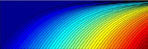
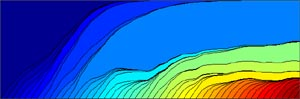

| bs | td>
Matlabの恐るべき事実 Michelの指摘による
Matlabのpiは4atan(1)を計算している。従ってpiを使うと計算速度はかなり遅くなる。
実際メモリーから呼び出すのと、この簡単な計算を行うのとどっちが早いか計算してみた。
10万回piを呼び出すことを100回行い、平均値と標準誤差を計算してみると
pi 平均 0.1102 標準誤差 0.494
PI 平均 0.0475 標準誤差 0.0236
piは倍近くかかっている！
I was a bit astonished by Michel's information that in Matlab pi computes 4atan(1).
So I called pi 100,000 times. I repeated this 100 times. As a comparison, I memorized pi as PI = pi, and did the same thing.
The result of the mean computing time and standard errors were
pi: mean 0.1102 [s] SD 0.494 PI: mean 0.0475 [s] SD 0.0236
Q. I have data with low sampling resolution.
A. In addition, please check if your data contains duplicated samples. A small bin width will be selected for such highly correlated samples. See below for the solution to the duplicated data due to the low sampling resolution. To obtain the optimal bin size correctly, it is recommended to replace your data x with x+r, where r is an uniform random variable drawn from [-dx/2, dx/2]. dx is sampling resolution of data acquisition. You repeat this to all samples x with independently drawn r. Use this randomized data to obtain the optimal bin size. To draw histogram, use the original data. See the difference with the following examples.
Copy and paste rounded data
進化力学系の非平衡相転移
Illustration of Evolutionary Game Process. Diffrent colors are gains of each player. New players join the game every time step. x-axis: time, y axis: gains. |
 |
| Co-existence of players: each area obeys Bose Distribution. |
|  |
Dominance by a single player is described by Bose-Einstein Condensation. |
多数のプレーヤー(種)が限られた資源(個体数)を奪い合う離散力学系の競争のモデルを考察する. 例として無性生物種間の生存競争への適用を念頭に議論する.
幾何級数的個体数増加に対する調整項として１ステップ毎に全個体数が一定になるよう正規化項を導入する. また系には１ステップ毎に新しく種が参入し,
参入した種の増殖能力(適応度)は確率的に与えられるとする. このモデルでは種に割り当てられる適応度の確率分布如何によって力学系の振る舞いが大きく異なる.
一方の相では参入する全種が増加することなく共存する. 他方の相では一部の種が資源を搾取し, 適応進化が始まる. 個体数増加が確率的に与えられるモデルでも同様に,
支配的な種が浮動的に入れ替わる相と適応進化を伴って表れる相の二つが存在する. 適応度の分布を調節するパラメータを導入することでこの非平衡系での相転移を解析した.
Shimazaki H. and Niebur E., Phase transitions in multiplicative competitive processes, Physical Review E (2005) 72(1), 011912 [Full Text, PDF, link]
島崎秀昭, 離散力学系の競争モデルに見られる相転移 --統計物理学の視点から-- [PDF]